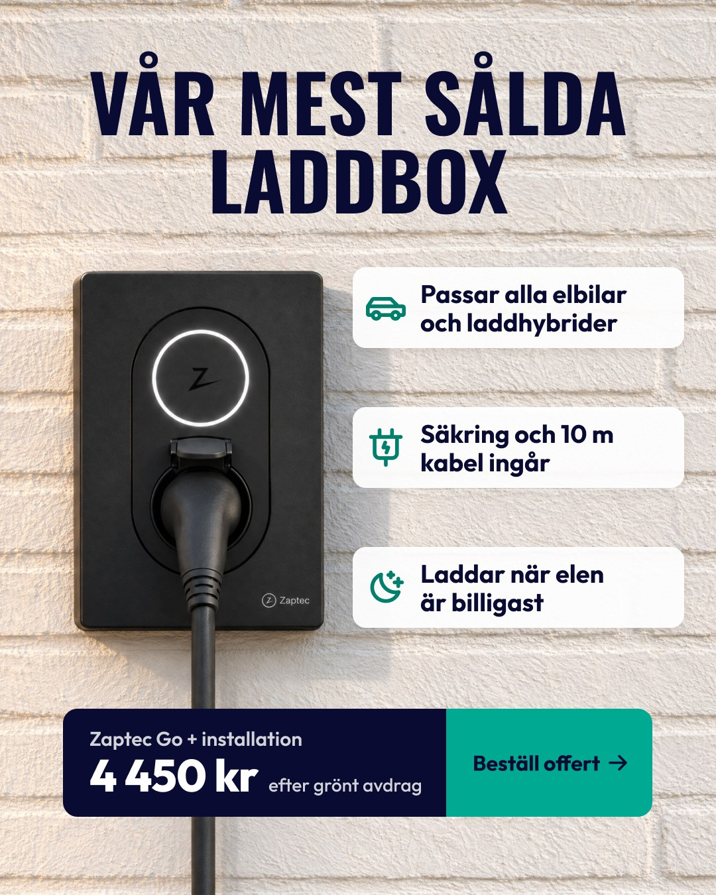
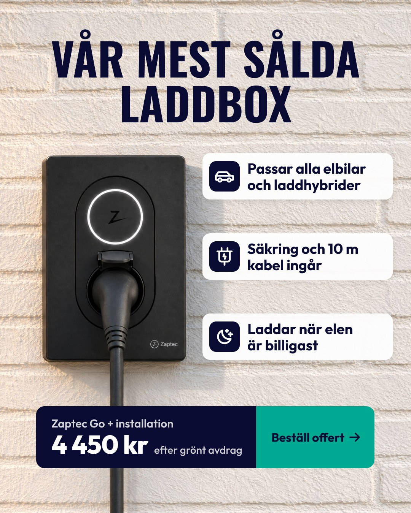
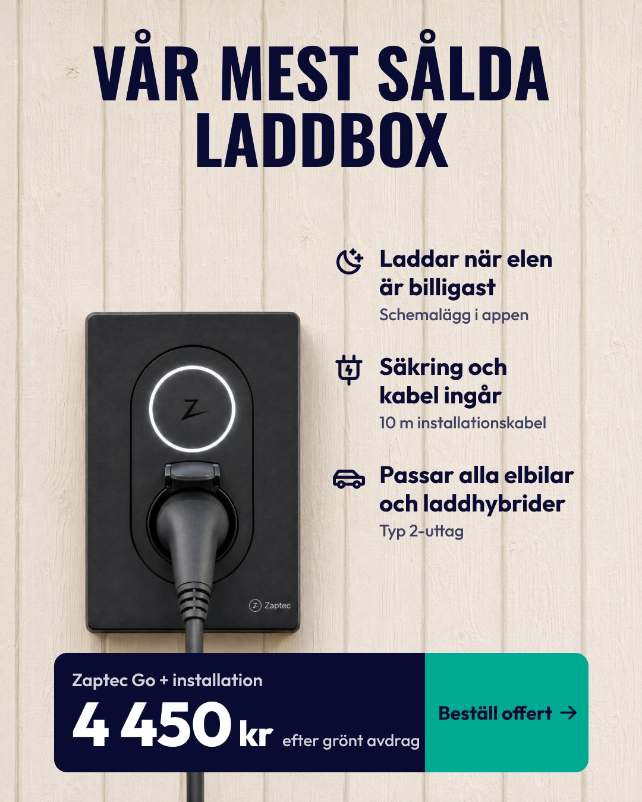
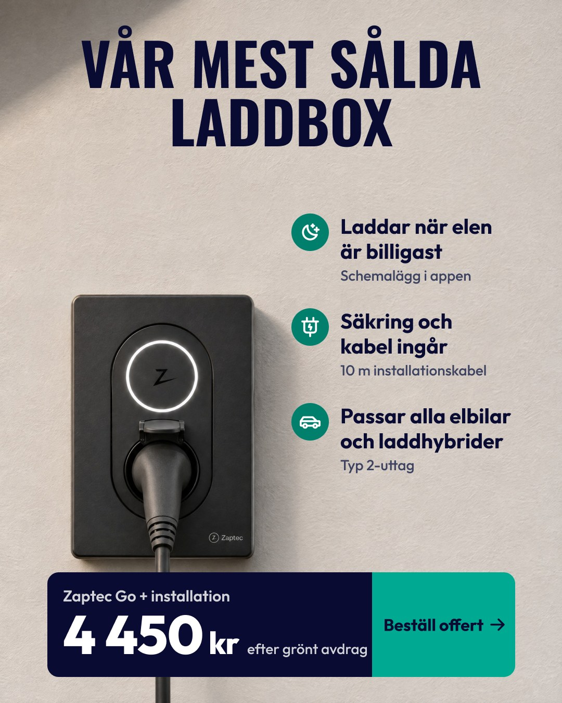
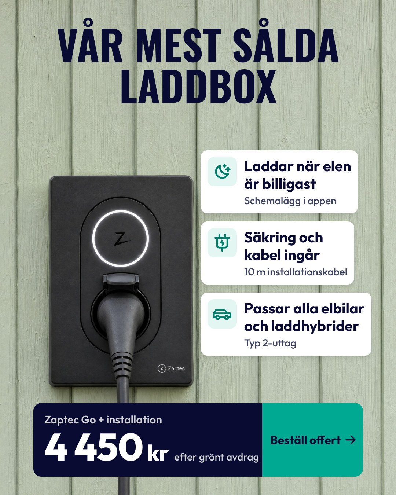
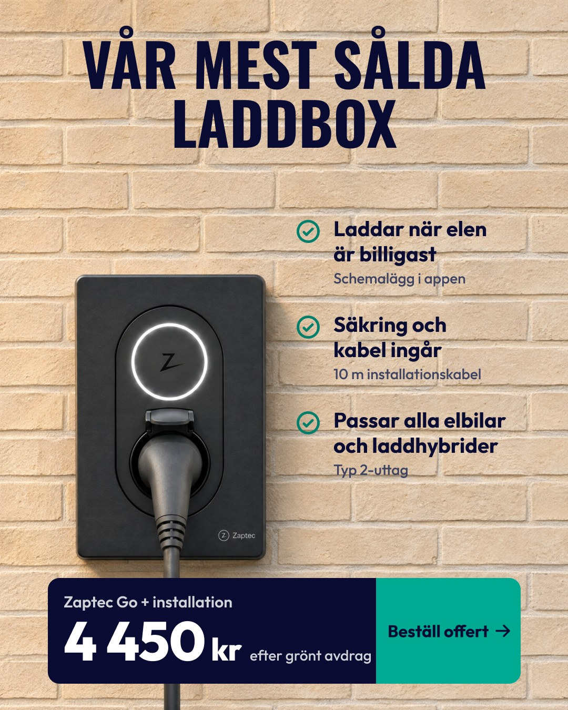
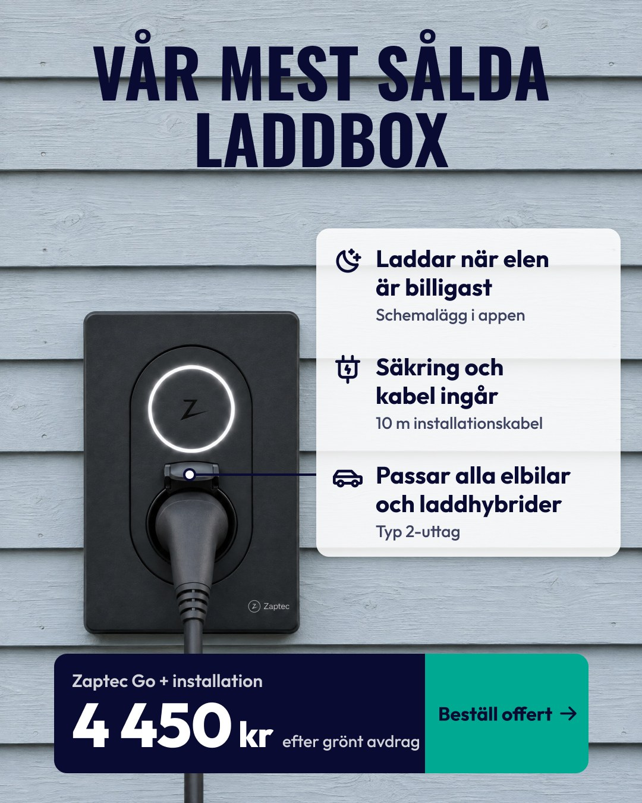

Vår mest sålda laddbox · G1B-02 och G1B-05
G1B-02 Tegelväggen · nya ikoner (Phosphor Bold)

G1B-02A
Ikon utan ruta
G1B-02B
Mintruta

G1B-02C
Midnattsruta
G1B-05 Specbladet · nya bilder och punktlistor

G1B-05A
Vit träpanel · ikoner

G1B-05B
Ljusgrå puts · tealcirklar

G1B-05C
Salviagrön · kort

G1B-05D
Sandtegel · bockar

G1B-05E
Blågrå · spec med pekare